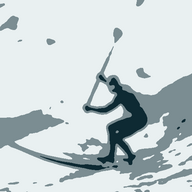

Zandvoort Golfsup
Gegevens ophalen…
SUP ALERT
Voorspelling laden…
Per dag
Komende dagen in het kort
Meerderheid = minstens twee van Klodde, ECMWF en GFS geven een score van 7 of hoger. Donkere uren staan erbij.
Zo lees je de tabellen
- Per uur een score van 0 tot 10 voor Klodde (mijn voorspelling, zie Bronnen), ECMWF en GFS. De golfhoogte is de basis: 0,7 m geeft een 7, 0,8 m een 8, 0,9 m een 9 en vanaf 1 m een 10. Te veel wind (boven je grenzen) of een te korte periode verlaagt de score. Groen is 7 of hoger: goed. Geel is 4 tot 6, grijs lager.
- De SUP ALERT bovenaan komt alleen bij een Klodde-score van 7 of hoger én een golf vanaf je alertgrens (standaard 0,8 m), overdag.
- Daaronder de golfhoogte in meters met de periode in seconden, de golfenergie van Klodde (kW per meter golffront) en de wind per model.
- Klodde-vakjes met een stippelrand komen (deels) uit de boeimetingen van de laatste uren.
- Windkleuren: blauw binnen je grens, oranje tot 5 kn erboven, rood verder erboven. De letters zijn waaruit de wind komt, de pijl waar hij naartoe waait.
- Getij: push (blauw) is de twee uur voor hoogwater en telt 1 punt extra. Afgaand tij is paars; de laatste twee uur voor laagwater tellen bij golven onder 1 m 1 punt minder.
- Met de knop Wind (kn) zie je in de scorerijen de windsnelheid in plaats van de score. Scroll de tabel zijwaarts voor alle uren.
Jouw grenzen
Aflandig is wind uit 45° tot 155° (NO tot ZZO), aanlandig uit 245° tot 335°, de rest is zijwaarts. Je grenzen worden op dit apparaat bewaard. Aflandige wind blaast je van de kust af en het water is koud: leash en wetsuit.
Nu op zee
Hm0 is de significante golfhoogte, Tm-1,0 de energieperiode, Tm02 de gemiddelde periode. Energie is 0,49 × Hm0² × Tm-1,0 in kW per meter golffront. Richting is waaruit de swell komt.
Wind gemeten en voorspeld
Hoe goed klopt het?
De modellen van de afgelopen zeven dagen naast de meting bij IJmuiden Munitiestort 2.
Bronnen en werkwijze
- Voorspelling: Open-Meteo (gratis voor niet-commercieel gebruik). Golven van ECMWF WAM en NOAA GFS Wave, gemiddeld over de rasterpunten op 52,25° en 52,5° NB, 4,5° OL (Zandvoort ligt ertussen). Wind van ECMWF IFS (0,25°) en GFS. Getij: astronomische getijvoorspelling van Rijkswaterstaat voor IJmuiden. Periode: bij ECMWF de piekperiode, bij GFS de swellperiode.
- Metingen: Rijkswaterstaat Waterwebservices (open data), elk uur opgehaald door een automatische taak in de GitHub-repository.
- Klodde voorspelt de golfhoogte bij IJmuiden Munitiestort 2 in drie lagen. 1) Modellen: golfhoogte van ECMWF en GFS, gecorrigeerd met hun eigen wind (0,98 keer de hoogte, plus 0,0012 m per knoop aanlandige wind, min 0,0094 m per knoop aflandige wind; gefit op 60 dagen metingen) en geschaald met de fout van de afgelopen zeven dagen, apart voor lage en hoge golven. 2) Getij: kleine factor op de hoogte (gemeten 0 tot 3,5 procent) en een punt erbij of eraf in de score voor push en laagwater. 3) Boeien: tot 3 uur na de laatste meting komt Klodde uit de metingen van Munitiestort 2, K14, J6 en L9 plus de wind, daarna steeds minder tot 0 bij 12 uur. Getest op 60 dagen: 6 tot 19 cm fout tot 9 uur vooruit bij golven onder 1,5 m.
- Swellperiode en -richting voegen in de metingen weinig toe bovenop hoogte en wind, en de golfmodellen rekenen ze al mee. Korte golven (onder 6 s) en swell uit het noorden komen wel zwakker aan. Energie wordt gebruikt om bij gelijke score het beste moment te kiezen.
- De windrichting is waaruit de wind komt. De tabellen beginnen bij het uur van zonsopkomst en stoppen bij het uur van zonsondergang (zontijden van Open-Meteo). Een SUP ALERT komt alleen tussen zonsopkomst en zonsondergang.